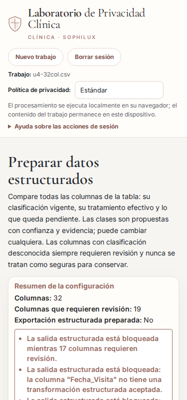

01 · Sophilux aprobado
Referencia de lenguaje visual y jerarquía editorial. Estado distinto; no usar como prueba de paridad pixel a pixel ni de clasificación de 32 columnas.

Contrato estético de Sophilux B V1, sin claims de funcionalidad actual.
02 · U4 anterior
Evidencia real U4 con 32 columnas y clasificación: referencia histórica del problema de densidad a 375 px.

32 columnas sintéticas. Documento y inspector solo se ven al seguir desplazándose en captura completa.
03 · V4 tras R3
Mismo tipo de trabajo: 32 columnas y 19 pendientes. Las mejoras R3 aprobadas eran Revisión, Celdas y Resultado, no esta tabla.

Medidas R3: primer viewport 375×800; tabla desde y≈1.111, inspector desde y≈2.847; sin overflow horizontal. Pendiente decisión de ergonomía, no defectos de motor.